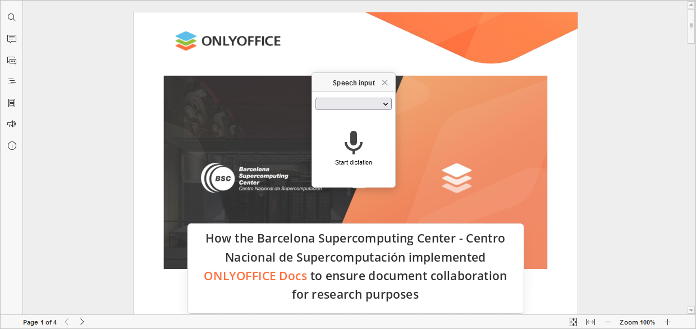

Kucajte putem glasa
U PDF Editor, možete unositi tekst svojim glasom.
Počevši od ONLYOFFICE Docs verzije 8.2, nijedan plugin ne dolazi podrazumevano uz editore. Plugin-ovi se instaliraju putem Plugin Manager.
- Postavite kursor na mesto gde želite da dodate tekst.
- Prebacite se na Plugins karticu i izaberite Speech input.
- U iskačućem prozoru izaberite jezik za prepoznavanje.
-
Kliknite Start dictation dugme i počnite da govorite. Kada napravite pauzu, tekst će biti dodat u PDF. Da biste isključili prepoznavanje glasa, ponovo pritisnite dugme.
Da bi plugin ispravno radio, morate imati ulazni uređaj (npr. mikrofon ili slušalice) kao i dozvole u pregledaču za korišćenje ovih uređaja za snimanje.
